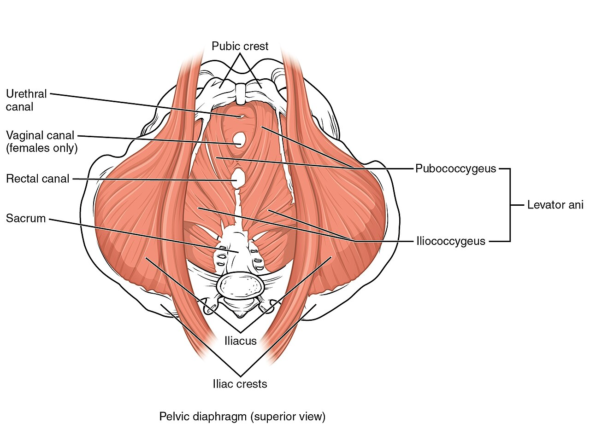

Chiếc Võng Sinh Học Đỡ Nâng Toàn Bộ Cơ Thể
Nằm ẩn sâu ở đáy khung xương chậu, Sàn Chậu (Pelvic Floor) là một mạng lưới đan xen tinh vi của các dải cơ, dây chằng và mạc liên kết trải dài từ xương mu phía trước đến xương cụt phía sau.
Hãy hình dung sàn chậu như một "chiếc võng đàn hồi chịu lực": 1. Nâng đỡ cơ quan nội tạng: Giữ vững bàng quang, tử cung, cổ tử cung và trực tràng ở vị trí giải phẫu chuẩn xác, chống lại trọng lực và áp lực dồn xuống khi đi đứng, chạy nhảy. 2. Kiểm soát bài tiết (Continence): Đóng mở các lỗ tự nhiên (niệu đạo và hậu môn), ngăn ngừa hiện tượng rò rỉ nước tiểu hoặc hơi ngoài ý muốn. 3. Bản lĩnh phòng the: Sự co bóp nhịp nhàng của các bó cơ Bulbospongiosus và Ischiocavernosus tăng cường tưới máu vùng sinh dục, làm dày thành âm đạo và trực tiếp tạo nên các đợt sóng co bóp khi đạt cực khoái. 4. Vùng lõi thể lực (Core Stability): Là mảnh ghép đáy quan trọng trong hệ thống giữ thăng bằng và truyền lực từ thân trên xuống chi dưới trong mọi động tác thể thao.

Mô Hình "Chiếc Hộp Áp Lực Ổ Bụng" (The Intra-Abdominal Cylinder)
Nhiều người tập luyện thường chỉ chú ý đến cơ bụng 6 múi (Rectus abdominis), nhưng trong vật lý trị liệu thể thao, sự vững vàng của cơ thể được quyết định bởi Mô hình chiếc hộp 4 mặt: - Nắp trên (Roof): Cơ hoành lồng ngực (Thoracic Diaphragm) điều phối nhịp thở. - Thành bao quanh (Walls): Cơ bụng sâu ngang (Transversus Abdominis) và các cơ nhiều chân dọc sống lưng (Multifidus). - Đáy hộp (Floor): Nhóm cơ sàn chậu (Pelvic Floor Musculature).
Khi bạn hít vào, cơ hoành hạ xuống làm tăng áp lực ổ bụng; lúc này, một sàn chậu khỏe mạnh sẽ linh hoạt hạ xuống và giãn dài tự nhiên (Eccentric lengthening) để dung nạp áp lực. Khi bạn thở ra, cơ hoành nâng lên và sàn chậu tự động co rút nâng lên (Concentric contraction).
Nếu nhịp chuyển động đồng bộ hình piston này bị phá vỡ—ví dụ như bạn nín thở khi nâng tạ nặng hoặc gồng cứng bụng liên tục—áp lực ổ bụng không có lối thoát sẽ dồn thẳng xuống dưới, làm rách xước các sợi cơ đáy chậu và dẫn đến Sa tạng vùng chậu (Pelvic Organ Prolapse) hoặc són tiểu khi gắng sức.
Hai Thái Cực Rối Loạn: Nhược Trương vs. Tăng Trương Lực
Nhiều phụ nữ lầm tưởng rằng hễ có triệu chứng bất thường ở vùng kín hay són tiểu là do "cơ bị nhão" và cần phải tập Kegel cật lực. Đây là sai lầm nguy hiểm:
| Đặc Điểm Nhận Diện | Sàn Chậu Nhược Trương (Hypotonic / Weak) | Sàn Chậu Tăng Trương Lực (Hypertonic / Tight) |
|---|---|---|
| Trạng Thái Cơ Học | Cơ quá yếu, nhão, mất khả năng co thắt nâng đỡ hiệu quả. | Cơ luôn bị co cứng, căng thẳng mãn tính, không thể thả lỏng về mức nền. |
| Triệu Chứng Thường Gặp | Són tiểu khi ho, cười, nhảy dây (SUI); cảm giác lỏng lẻo khi quan hệ; nặng tức âm đạo như có vật rơi ra (sa tạng). | Đau rát khi quan hệ (Dyspareunia); tiểu ngắt quãng, tiểu không hết bãi; táo bón mãn tính; đau vùng xương cụt khi ngồi lâu. |
| Đối Tượng Phổ Biến | Phụ nữ sau sinh nhiều lần bằng ngả âm đạo, phụ nữ mãn kinh thiếu hụt estrogen, người ít vận động. | Vận động viên chạy bộ, tập CrossFit, người tập Pilates/Yoga liên tục hóp bụng, người bị stress lo âu mãn tính. |
| Hậu Quả Nếu Tập Kegel | Có lợi: Giúp tăng khối lượng cơ và phục hồi lực nâng nếu tập đúng kỹ thuật. | Cực kỳ có hại: Khiến các bó cơ vốn đã quá tải bị co rút nặng hơn, làm cơn đau vùng chậu bùng phát dữ dội. |
4 Sai Lầm Nghiêm Trọng Phá Hủy Sàn Chậu
- Vừa Đi Tiểu Vừa Tập "Ngắt Dòng Nước Tiểu": Động tác này chỉ dùng một lần duy nhất để giúp bạn nhận biết vị trí nhóm cơ sàn chậu. Việc liên tục ngắt dòng tiểu khi bàng quang đang xả nước sẽ làm loạn phản xạ co bóp của bàng quang, gây ứ đọng nước tiểu và viêm đường tiết niệu.
- Nín Thở Ép Hơi Khi Nâng Tạ Nặng (Nghiệm Pháp Valsalva Quá Mức): Nín thở khi thực hiện bài tập Squat hoặc Deadlift tạo ra một đợt sóng áp lực khổng lồ đè bẹp các sợi collagen sàn chậu.
- Thói Quen Thường Xuyên "Hóp Bụng Tạo Vòng Eo Con Kiến": Việc liên tục gồng cơ bụng suốt cả ngày khiến sàn chậu bị ghì chặt ở vị trí co ngắn, triệt tiêu tính đàn hồi linh hoạt.
- Ngồi Rặn Cố Khi Táo Bón: Lực rặn mạnh khi đại tiện là nguyên nhân cơ học hàng đầu gây giãn dây chằng tử cung và sa búi trĩ.
Giao Thức 4 Bước Rèn Luyện Sàn Chậu Đàn Hồi Toàn Diện
- Luyện Kỹ Thuật Thở Piston (Piston Breathing): Ngồi thẳng lưng trên bóng tập hoặc ghế phẳng. Đặt một tay lên ngực, một tay lên bụng dưới. Hít vào bằng mũi 4 giây: cảm nhận bụng phình ra và đáy xương chậu mở rộng nhẹ nhàng; thở ra từ từ qua miệng 6 giây: cảm nhận sàn chậu tự nhiên nâng nhẹ lên mà không cần gồng mông hay cơ đùi trong.
- Ưu Tiên Khả Năng Thả Lỏng Trước Khi Tăng Lực: Trước khi nghĩ đến việc siết mạnh, hãy chắc chắn bạn có thể thả lỏng cơ hoàn toàn về trạng thái nghỉ sau mỗi lần co rút. Tỷ lệ thời gian tập lý tưởng là 1 giây co : 2 giây thả lỏng nghỉ ngơi.
- Quy Tắc "Thở Ra Khi Gắng Sức" (Blow Before You Go): Trong mọi bài tập gym (Squat, Lunge, Deadlift) hoặc khi bốc vác đồ nặng: hãy bắt đầu thở ra nhịp nhàng ngay trước thời điểm bạn dùng lực đẩy tạ lên. Hành động thở ra sẽ tự động kích hoạt sàn chậu co nâng lên, tạo tấm khiên che chắn ổ bụng.
- Lắng Nghe Tín Hiệu Thần Kinh & Cơ Bắp: Nếu bạn ghi nhận điểm HRV sụt giảm sâu trên thiết bị đeo kết hợp với cảm giác tức nặng ở xương mu sau các buổi tập tạ nặng, hãy giảm bớt mức tạ và tăng thời gian nghỉ ngơi để mô liên kết sàn chậu kịp tái tạo collagen.
Nguồn Y Khoa Lâm Sàng & Tài Liệu Tham Khảo
- Bø, K., et al. (2016). Exercise and pelvic floor dysfunction in female athletes: a systematic review. British Journal of Sports Medicine, 50(10), 571-580. Tạp chí BJSM: Sàn Chậu & Vận Động Viên Nữ (PMID: 26822204) ↗
- Dumoulin, C., et al. (2018). Pelvic floor muscle training versus no treatment, or inactive control treatments, for urinary incontinence in women. Cochrane Database of Systematic Reviews, (10). Tổng Quan Hệ Thống Cochrane: Bài Tập Cơ Sàn Chậu (PMID: 30288772) ↗
- Nygaard, I. E., et al. (2016). Physical activity and the pelvic floor. American Journal of Obstetrics and Gynecology, 214(2), 164-171. Tạp chí AJOG: Hoạt Động Thể Chất & Sức Khỏe Cơ Đáy Chậu (PMID: 26386382) ↗
- WHOOP Medical Knowledge Base & Apple HealthKit (2025). Core Strain, Intra-Abdominal Pressure, and Menstrual Health Integration. WHOOP The Locker: Muscular Strain & Core Stability ↗